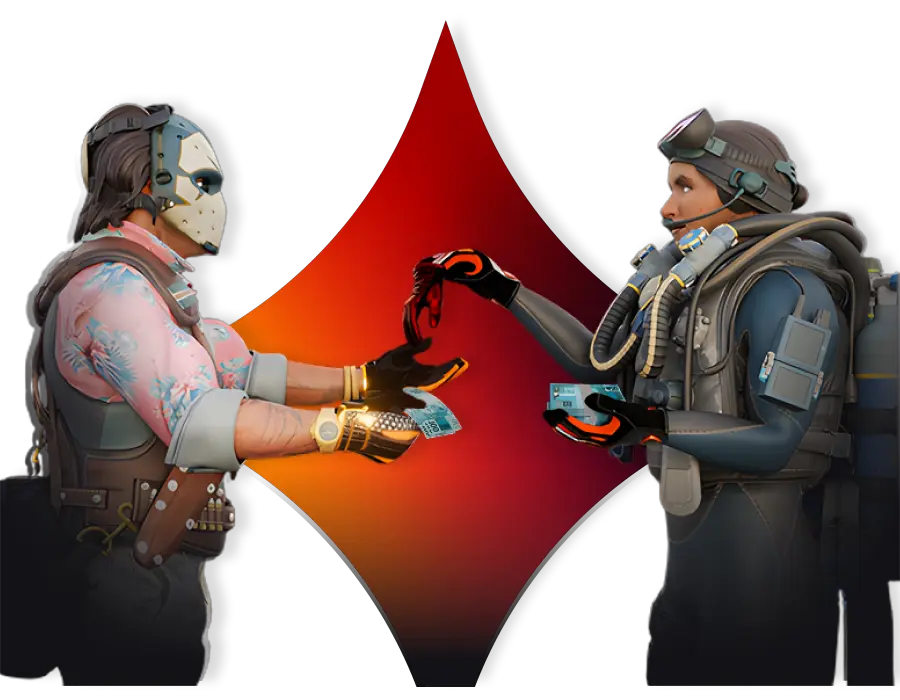

Sobre Nós

A comunidade gamer está em polvorosa com a chegada do novo Counter-Strike 2. A evolução de um dos FPS mais icônicos do mundo trouxe gráficos aprimorados, jogabilidade refinada e ainda mais competitividade para os fãs da franquia. Mas a experiência vai muito além das partidas intensas e das disputas ranqueadas.
O mercado de skins continua em plena expansão, movimentando jogadores e colecionadores ao redor do mundo. Itens digitais como skins de armas e chaves não são apenas elementos estéticos: eles possuem valor real e podem ser negociados de forma estratégica. Além das skins de CS2, também é possível negociar itens de Rust, ampliando ainda mais as oportunidades dentro desse universo virtual.
ShopCS, você encontra um ambiente prático e seguro para comprar e vender skins com facilidade. A plataforma permite que jogadores transformem seus itens digitais em criptomoedas, aproveitando um mercado dinâmico e em constante valorização. Seja para investir, colecionar ou simplesmente renovar seu inventário, o processo é simplificado e acessível.
Se você quer entrar de vez nesse universo e aprender como negociar skins de CS2 de forma eficiente, nós ponto de partida ideal. Aqui, você descobre como comprar, vender e aproveitar ao máximo o potencial dos seus itens digitais.
Nossos Serviços
- Compra
- Vendas
- Trocas
- Leilão